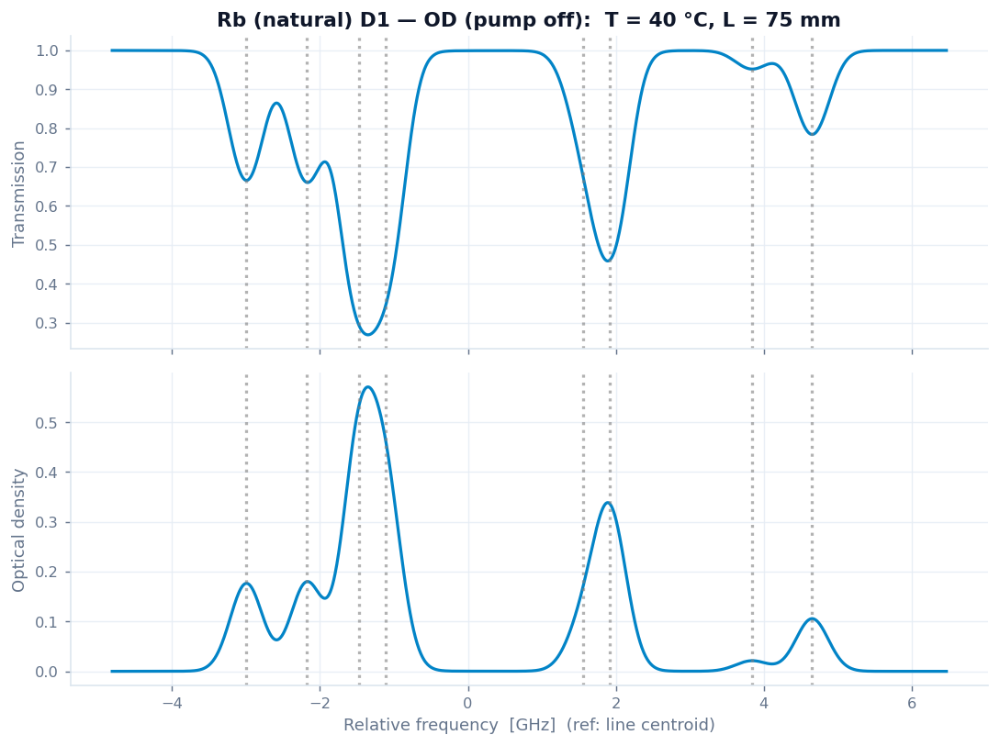
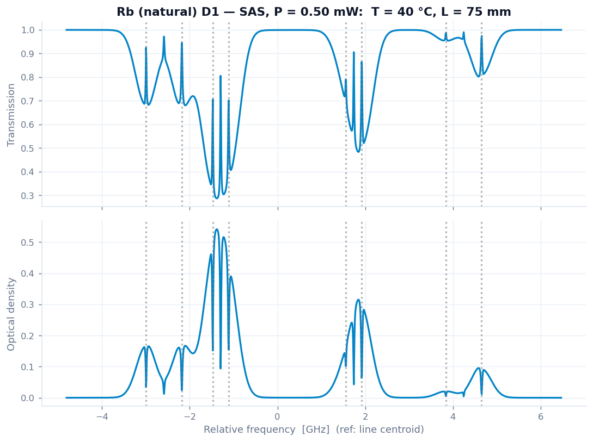
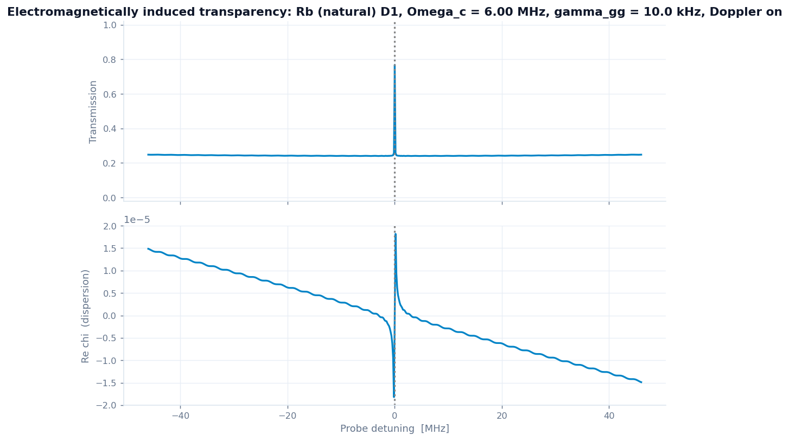
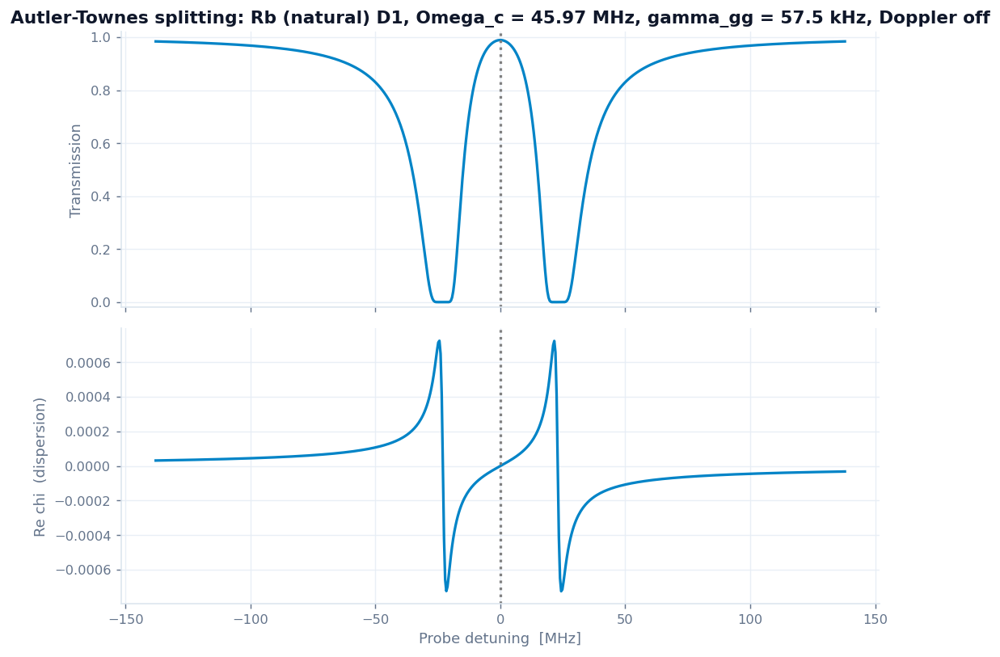
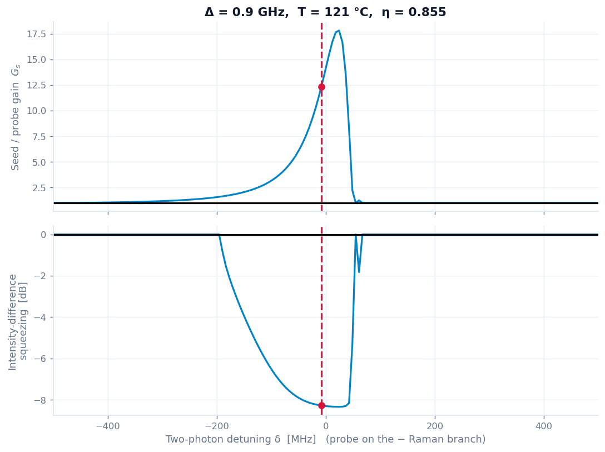

GABES란 무엇인가
정상상태 OBE를 푸는 toy model입니다. 다만 꽤 깊은 수준의 toy입니다.
원자-광 상호작용을 정량적으로 보려면 결국 밀도행렬 ρ의 운동방정식을 풀게 됩니다. GABES가 푸는 것도 바로 그것으로, 회전틀에서의 리우빌 방정식의 정상상태입니다.
여기서 𝓛는 자발방출과 바닥상태 결잃음을 담은 린드블라드 소산자입니다. GABES는 이 식을
레벨 구조(AtomModel)와 실험 구성(Scheme)으로부터 자동으로 조립하고,
속도 클래스마다 정상상태 ρ를 구한 뒤 결맞음
ρeg에서 감수율 χ를 읽어, 거기서
흡수·분산·이득·편광회전을 만듭니다. 시간영역 적분이 아니라 정상상태 선형 풀이라는
점이 핵심입니다.
GABES는 논문급 full simulation을 대체하기 위한 도구가 아니라, 실험자가 OBE 기반 현상을 빠르게 훑고 파라미터 감각을 잡아 다음 실험 조건을 정하는 데 도움을 주기 위한 도구입니다. 단순한 2-준위 장난감에 머무르지 않고, 알칼리 원자 분광에서 중요한 Doppler 평균, hyperfine pumping, Λ 결맞음, Zeeman 결맞음, FWM 전파를 가능한 한 계산 가능한 형태로 끌어들였습니다.
잘 맞는 용도
- OD/SAS, EIT/AT/CPT, Hanle/NMOR, Rydberg-EIT, FWM 같은 현상의 파라미터 의존성 탐색
- 온도·셀 길이·detuning·Rabi·자기장 스케일 변화에 대한 1차 예측
- 실험 데이터와 비교하기 전, 대략 어디를 봐야 할지 정하는 지도 제작
- 새 scheme을 얹기 위한 공통 OBE 계산 골격
조심해야 할 용도
- 모든 실험 세부를 포함한 최종 fitting 엔진으로 쓰는 것
- 절대 잡음·pump scattering·잔류 sideband·window 복굴절 같은 실험 잡음을 자동으로 설명한다고 기대하는 것
- 모델 범위를 벗어난 조건에서 수치 결과를 정량적으로 과신하는 것
그래서 무엇이 "깊은가"
의도적으로 단순화한 부분은 분명히 있지만, 다음과 같은 물리는 실제로 살아 있습니다.
- ⁸⁵Rb D1 흡수 절대 스케일을 실험실 AutoOD 계산기와 0.1 % 이내로 재현합니다 (CRC 증기압 밀도 + CG·|d|² 정규화).
- 알칼리 SAS의 핵심인 hyperfine optical pumping(다른 바닥상태로의 CG 분기 붕괴)을 담아, crossover가 단순 dip이 아니라 증강·반전 피크로 나타납니다.
- 자발방출의 결맞음 전이를 편광별 Σq 점프 연산자로 넣어, Hanle 영역의 고유 EIA와 buffer-gas LCA 같은 미묘한 부호 전환까지 재현합니다.
- FWM은 ⁸⁵Rb D1 double-Λ에서 Sim et al.의 동작점(이득 ≈ 15, IDS −7.8 dB)을 잡습니다.
단순화한 부분이 있지만, GABES가 빠른 이유는 물리를 덜어냈기 때문이 아닙니다. 실제 hyperfine Clebsch–Gordan 세기, Doppler 앙상블, Zeeman 다양체, 자발방출의 결맞음 전이, 실측 보정 밀도·선폭은 모두 유지하고 있습니다. 가속은 전적으로 방정식의 구조를 활용한 풀이 방식에서 비롯됩니다. 자세한 내용은 5절에서 설명합니다.
빠른 시작
설치 없이 웹에서 바로 써 볼 수 있고, 로컬 실행도 한 줄입니다.
로컬에서 실행할 때는 저장소를 클론한 뒤 루트에서 아래 명령을 사용합니다.
# 의존성: streamlit, numpy, matplotlib
git clone https://github.com/Shake2313/fwm-squeezing-app.git
cd fwm-squeezing-app
pip install -r requirements.txt
streamlit run streamlit_app.py
python streamlit_app.py로 실행하는 방식이 아닙니다. Streamlit 서버를 띄우는
앱이므로 반드시 streamlit run streamlit_app.py로 실행합니다.
FWM 백엔드의 이전 호환용 CLI는 archive/fwm_obe.py에 보관되어 있으며,
더 이상 저장소 루트의 진입점으로 제공되지 않습니다. 일반적인 사용에는 Streamlit UI를 권장합니다.
화면 사용법
"scheme 선택 → 파라미터 조정 → 결과 확인"의 단순한 흐름입니다.
GABES의 화면은 고정된 슬라이더 벽이 아닙니다. 선택한 물리 scheme이 필요한 컨트롤만 선언하면, 앱이 그 컨트롤과 플롯을 자동으로 그립니다. 그래서 화면에는 지금 보는 현상에 관계있는 노브만 나타납니다.
Recompute 노브와 navigate 노브
노브에는 두 종류가 있습니다. 일부 노브는 값을 바꾸면 OBE를 다시 풉니다(recompute). 다른 노브는 이미 계산된 곡선에서 읽는 위치만 옮기므로 즉시 반응합니다(navigate). 예를 들어 씨앗형 FWM에서 OPD·온도·펌프 세기는 재계산 대상이지만, TPD 읽기는 캐시된 곡선 위의 동작점을 옮기는 동작입니다.
슬라이더를 움직였을 때 즉시 반응하면 navigate 노브이고, 잠깐 "Solving Bloch equations…"가 뜨면 recompute 노브입니다. 넓게 둘러볼 때는 navigate 노브로, 정밀 조정은 recompute 노브로 하는 편이 가장 쾌적합니다. 헤더의 "N solve knobs" 배지가 그 scheme에서 무거운 노브가 몇 개인지 알려 줍니다.
Advanced / numerics
고급 수치 설정은 기본적으로 접혀 있습니다. velocity step, scan points, Doppler on/off, transit relaxation 같은 항목은 결과를 바꿀 수 있지만 처음부터 만질 필요는 없습니다. 먼저 Default와 기본 노브로 모양을 본 뒤, 필요할 때만 펼쳐서 민감도를 확인하길 권합니다.
Scheme별 기능
현재 다섯 개의 scheme(엔진 클러스터)이 있습니다. 아래 그림은 모두 GABES가 직접 계산해 출력한 실제 스펙트럼입니다.
| Scheme | 주요 물리 | 주요 출력 | 먼저 만질 노브 |
|---|---|---|---|
| OD / SAS | 약한 프로브 흡수, Doppler 넓힘 OD, 포화흡수, hyperfine optical pumping | 투과, OD, Doppler FWHM, hyperfine 선 표 | 펌프 세기, isotope, D1/D2, 온도, 셀 길이 |
| Λ 결맞음 EIT / AT / CPT |
3-준위 Λ, 투명창, Autler–Townes 분리, 암흑공명 | 투과, Re χ, 창 FWHM, 군지수, AT 분리 | regime, 결합 Rabi, 바닥 dephasing, Doppler, 온도 |
| Rydberg-EIT 전기계측 |
⁸⁵Rb 5S–5P–40D 캐스케이드 EIT, 37 GHz 마이크로파 AT | EIT 선폭, RF AT 분리, 광학 분산 | EIT/AT 모드, 결합 Rabi, LO Rabi, 마이크로파 detuning |
| Hanle / EIA / NMOR | ⁸⁷Rb D1 Zeeman 다양체, 영자기장 근처 투과·자기광학 회전 | Hanle 특징, NMOR 회전, B 폭, 셀·완화 파생량 | 신호 종류, 셀 종류, 전이, 세기, QWP 각도, B 스캔폭 |
| FWM Squeezing / Biphoton |
⁸⁵Rb D1 double-Λ 씨앗형 이득/스퀴징, 범용 SFWM 짝광자 추정 | 프로브·켤레 이득, 세기차 스퀴징, g²SI, CAR, 발생률 | 모드, OPD, TPD, 온도, 펌프/프로브 세기, 위상정합 각도 |
흡수 분광 (OD / SAS)
역행 펌프가 있는 약한 프로브 흡수입니다. 펌프를 0으로 내리면 Doppler 넓힘 OD가 되고, 펌프를 올리면 Doppler-free Lamb dip과 crossover가 같은 스펙트럼 위에 나타납니다. ⁸⁵Rb/⁸⁷Rb/¹³³Cs · D1/D2 또는 천연 Rb를 지원합니다.


펌프 세기 슬라이더 하나로 OD와 SAS 사이를 연속적으로 오갈 수 있습니다. 프로브는 약하게 고정되어 읽기 역할만 하며, 노브는 펌프 세기[mW]입니다 (I = 2P/πw2, Isat로 Rabi 환산).
Λ 결맞음 (EIT / AT / CPT)
하나의 Λ 엔진을 세 영역으로 보여 줍니다. 결합장이 약하면 EIT 투명창, 강하면 Autler–Townes 이중선(간격 ≈ Ωc), 좁은 2광자 스캔에서는 CPT 암흑공명을 봅니다. Rb/Cs D-line 매질, 물리 단위(MHz/kHz) 컨트롤을 씁니다.


Rydberg-EIT 전기계측
⁸⁵Rb 캐스케이드 EIT / 마이크로파 AT 정적 스펙트럼입니다. 5S–5P–40D 사다리와 37 GHz 40D–39F RF 다리를 다루며, EIT 피크가 RF장에 의해 갈라지는 AT 분리가 전기장의 자 역할을 합니다.

Hanle / EIA / NMOR
⁸⁷Rb D1 Zeeman 다양체의 영자기장 근처 응답입니다. 바닥상태 결맞음에서 오는 영자기장 투과 dip/peak인 Hanle 효과(EIA 변형 포함)와 편광면 회전인 NMOR을 한 엔진으로 다룹니다. 프로브 타원율(QWP), 잔류 횡장, 셀 완화가 특징의 부호를 결정합니다.

4파 혼합 (FWM) · 짝광자
⁸⁵Rb D1 double-Λ의 씨앗형 이득/스퀴징(Sim et al. 동작점)과, 범용 SFWM 짝광자원 추정(g(2)SI(τ), CAR, 발생률, 위상정합)을 제공합니다.

느린 빛/군지수 읽기, Raman 이득, 고차 파혼합, Bell–Bloom 자력계, Na D-line 등은 검토 중입니다. 시간영역(STIRAP·Ramsey)과 2-시간 상관(Mollow·g(2)(τ))은 새 엔진 계층이 필요합니다.
왜 빠른가
OBE 계산이 느리다는 건 잘 알려져 있습니다. GABES는 그 느림의 원인을 계산 구조 차원에서 줄였습니다.
Doppler 평균이 들어간 OBE는 보통 느립니다. detuning 한 점마다, 속도 클래스 하나하나마다 작은 선형계(또는 비선형 OBE)를 따로 풀고 그것을 속도에 대해 수치적분하기 때문입니다. 스캔점 × 속도 샘플만큼의 독립 풀이가 쌓이고, 온도나 셀을 바꾸면 처음부터 다시 풉니다. GABES는 같은 답을 유지하면서 이 비용 구조를 네 가지 방식으로 줄입니다.
GABES는 무수히 많은 작은 선형 방정식을 하나씩 반복해 푸는 대신, 같은 구조의 리우빌리안을 한꺼번에 쌓아 풀고, Doppler·scan·field 축에서 재사용 가능한 부분을 미리 표로 만들어 둡니다. 그 결과 물리적 엄밀함을 상당히 살리면서도 대화형 속도를 얻습니다.
속도 클래스를 한꺼번에 풉니다
공진 기하에서 속도 v는 리우빌리안에 들뜬상태 대각의 이동으로만 들어옵니다. 즉 모든 속도가 하나의 템플릿을 공유하고 차이는 스칼라 하나뿐이라, 속도 앙상블과 detuning 스캔 전체가 구조가 같은 작은 선형계의 큰 묶음이 됩니다. GABES는 이를 한 축으로 쌓아 한 번의 벡터화된 배치 풀이로 동시에 처리합니다.
Δeff 표를 재사용합니다
한 번 만든 χ̄(δ, Δeff) 표는 온도와 전체 detuning에 독립입니다. 온도는 Maxwell 가중치로만, 스캔은 축의 평행이동으로만 들어가기 때문입니다. 그래서 Doppler 평균은 OBE를 다시 푸는 일이 아니라 미리 푼 표를 따라가는 가중 보간이 됩니다. 온도나 셀 길이를 바꿔도 무거운 풀이는 다시 돌지 않습니다.
작은 행렬에 맞춘 미시 최적화를 씁니다
한 번에 푸는 행렬은 아주 작습니다(M = n2 ≤ 64). 이 크기에서는 멀티스레드 선형대수의 호출 오버헤드가 오히려 손해이므로, 무거운 풀이 구간만 BLAS 스레드를 1로 제한합니다(전 작업에서 25–30 % 향상). 빔 전파의 전달행렬은 고유분해 없이 2×2 닫힌형으로 배치 계산합니다.
무거운 풀이와 가벼운 읽기를 나눕니다
UI에서 모든 슬라이더가 같은 비용을 갖지 않습니다. 실제로 OBE를 다시 풀어야 하는 노브만 캐시 키로 들어가고, 이미 계산된 곡선에서 값을 읽는 노브는 즉시 갱신됩니다. 덕분에 TPD 같은 동작점을 옮기며 이득·스퀴징 변화를 거의 실시간으로 볼 수 있습니다.
핵심 식
정직한 벤치마크
아래는 완전히 동일한 선형계 묶음(Λ 정상상태, 9×9, 2만 개)을 두 방식으로 푼 결과입니다. 한쪽은 점마다 따로, 다른 쪽은 GABES의 배치 풀이이며, 결과는 비트 단위로 같습니다(최대 오차 0). 물리를 바꾼 것이 아니라 푸는 순서만 바꾼 결과입니다.
이 4.7×는 작은 9×9에서 오직 배치화만으로 얻은 가장 보수적인 숫자입니다. 더 큰 다양체일수록, 그리고 위 두 번째 항목(표 재사용)이 더해질수록 실제 이득은 더 커집니다. 온도·셀·detuning을 바꾸는 대부분의 조작에서 무거운 풀이가 아예 다시 돌지 않기 때문입니다. 한 scheme의 전체 재계산은 대략 다음 수준입니다.
| Scheme | 한 번의 전체 재계산 | 내용 |
|---|---|---|
| Λ 결맞음 (EIT/AT/CPT) | ~0.6 s | Doppler-on Λ 스캔 |
| Absorption (OD/SAS) | ~0.4 s | 다중선 hyperfine + 펌프 SAS |
| Magneto (Hanle/NMOR) | ~0.35 s | B-스캔 × 속도, 2-영역 풀이 |
| FWM 집중 창 | ~수 초 | 3-모드 Floquet + Maxwell–Bloch 전파 |
측정값은 일반 노트북 CPU 기준의 한 예시이며 하드웨어에 따라 달라집니다. 요점은 절대 시간이 아니라 비용 구조입니다. 중첩 속도적분이 사라지고, 대부분의 노브 조작에서 재풀이가 일어나지 않는다는 점이 핵심입니다.
"빠르다"는 것이 "모델이 빈약하다"와 같은 말은 아닙니다. GABES는 많은 곳에서 실제 OBE, CG 분기 붕괴, Doppler 평균, Zeeman 다양체, Maxwell–Bloch 전파를 사용합니다. 다만 모든 비이상성을 처음부터 풀지 않고, 우선순위가 높은 물리만 계산 가능한 형태로 잘 접은 것입니다.
권장 사용 흐름
실험 조건을 잡을 때와 데이터를 비교할 때, 접근 방식이 조금 다릅니다.
실험 조건을 처음 잡을 때
- 가장 가까운 scheme을 고릅니다. 예를 들어 SAS 확인이면 OD / SAS, FWM 스퀴징이면 FWM → Squeezing입니다.
- Default를 먼저 적용합니다. 이 단계에서는 숫자 하나하나를 믿기보다 line shape과 scale을 봅니다.
- 온도·셀 길이·detuning·세기처럼 실험에서 실제로 움직일 수 있는 노브만 먼저 조정합니다.
- metric과 플롯을 함께 봅니다. 예컨대 이득이 커졌는데 스퀴징이 나빠지면 검출 효율 η나 손실 노브도 확인합니다.
- 마지막으로 Advanced / numerics를 열어 scan resolution, velocity step, 완화율 민감도를 확인합니다.
데이터와 비교할 때
- 절대 진폭보다 먼저 중심·폭·부호·branch·스케일링 추세를 비교합니다.
- 실험에 있는 손실·검출 효율·잔류 자기장·buffer gas·transit relaxation을 가능한 범위에서 맞춥니다.
- 계산이 실험을 설명하지 못하면, "코드가 틀렸다"보다 먼저 모델에 빠진 물리를 의심하는 편이 좋습니다.
새 scheme을 추가할 때
새 물리 구도는 Scheme을 상속하여 param_schema(),
compute(params), observables(raw, params)를 정의하고 registry에
등록하는 구조입니다. UI를 직접 수정하지 않아도 컨트롤과 플롯이 따라옵니다.
한계와 해석상의 주의
아직 베타입니다. 무엇이 근사이고 무엇이 검증됐는지 함께 적어 둡니다.
| 영역 | 현재 모델의 성격 | 주의점 |
|---|---|---|
| OD / SAS | hyperfine 다양체, CG 분기 붕괴, transit relaxation을 포함한 OBE 기반 모델 | Ne 압력 이동, Dicke 좁힘 등은 단순화되어 있습니다. |
| Λ 결맞음 | 스칼라 D-line 매질 위의 Λ 엔진 | 실제 편광·Zeeman 세부구조까지 자동 포함하는 full 모델은 아닙니다. |
| Magneto-optics | ⁸⁷Rb D1 Zeeman 다양체와 light/dark 또는 buffer 완화 모델 | 셀 벽·잔류장·optical pumping의 실제 복잡도는 실험별 조정이 필요합니다. |
| 씨앗형 FWM | ⁸⁵Rb D1 double-Λ 이득/스퀴징, 회귀로 고정한 기준 모델 | Langevin 잡음을 포함한 전파 손실, seed 과잉잡음, pump scattering 등은 아직 완전한 모델이 아닙니다. |
| 짝광자 SFWM | 문헌에 보정한 source estimate | 완전한 양자-Langevin 전파/잡음 계산으로 해석하면 안 됩니다. |
그 밖에 기억해 두면 좋은 점입니다.
- 정상상태 전용입니다. 시간영역·2-시간 상관은 미지원입니다(로드맵).
- FWM 이득은 고밀도에서 지수적으로 민감하므로, 잔여 결합 스케일은 보정 영역(~0.05) 근처에서 쓰길 권합니다.
- Rb는 강한 흡수체라 공진에서 cm급 셀이면 OD가 포화합니다. 그래서 OD/EIT/AT/CPT 기본값이 mm급 셀과 중간 온도를 씁니다.
- 일부 스케일 노브(line-strength factor 등)는 물리 변수가 아니라 유효 광학깊이 보정 손잡이입니다. 기본값 1.0이 검증 스케일을 재현합니다.
숫자는 실험 설계의 방향으로 쓰고, 절대값은 항상 해당 scheme의 가정과 함께 읽으시길 권합니다. GABES는 실험자의 사고 속도를 올리는 도구이지, 실험적 판단을 대체하는 도구는 아닙니다.
짧은 FAQ
GABES는 toy model인가요?
네. 다만 "아무 물리 없는 장난감"이라는 뜻은 아닙니다. 실험적으로 중요한 OBE 구조는 상당히 유지하되, 모든 실험 비이상성을 다 넣지는 않는다는 뜻에 가깝습니다.
왜 어떤 슬라이더는 바로 반응하고, 어떤 슬라이더는 오래 걸리나요?
OBE를 다시 풀어야 하는 노브와, 이미 푼 결과에서 읽는 위치만 바꾸는 노브가 다르기 때문입니다. 예를 들어 FWM의 TPD는 곡선 탐색에 가깝지만, 온도나 OPD는 재계산이 필요합니다.
계산이 실험과 다르면 어떻게 해야 하나요?
먼저 detuning 규약, 전이 라벨, 빔 waist의 반지름/지름 규약, 셀 길이, 온도, 손실, 검출 효율을 확인하시길 권합니다. 그다음 잔류 자기장, optical pumping, 압력 넓힘, 위상 부정합, 과잉잡음처럼 현재 모델 밖에 있거나 단순화된 항목을 의심하는 편이 좋습니다.
출처와 검증
각 scheme의 Reference / about 패널에 1차 문헌이 함께 들어 있습니다.
- 흡수 절대 스케일: 실험실 AutoOD 계산기와 ⁸⁵Rb D1에서 0.1 % 이내 일치. 밀도는 CRC 증기압, 선세기는 Wigner-6j/3j (Steck D-line data).
- SAS hyperfine pumping: Smith & Hughes, Am. J. Phys. 72, 631 (2004); Preston, Am. J. Phys. 64, 1432 (1996).
- Magneto: Lee & Moon, JOSA B 30, 2301 (2013); Moon & Kim, Opt. Express 22, 18604 (2014); Yu, Lee & Moon, Phys. Rev. A 81, 023416 (2010).
- FWM 스퀴징: G. Sim, H. Kim, H. S. Moon, Sci. Rep. 15, 7727 (2025) (⁸⁵Rb 최적점: Δ 0.9 GHz, δ −8 MHz, 121 °C → 이득 ≈ 15, IDS −7.8 dB).
회귀·물리 검증 테스트는 tests/에 있습니다(pytest tests/). 절대 스케일,
선폭, AT 분리, NMOR 영점 교차 등을 자동으로 확인합니다.